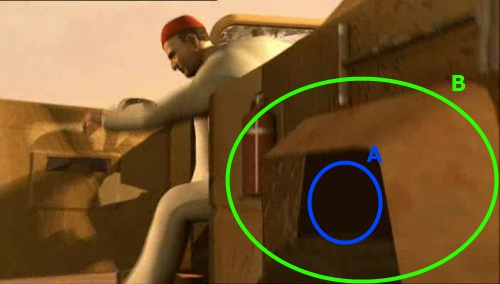
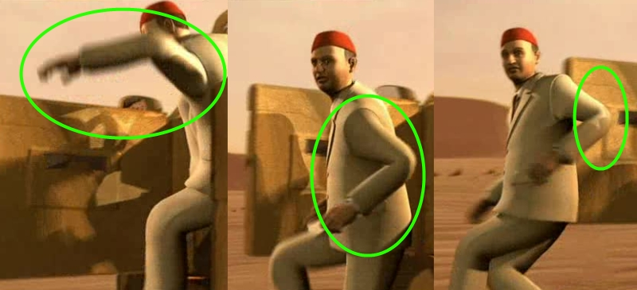
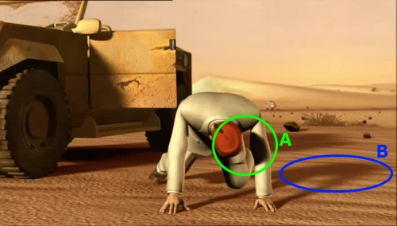

Project 1 | Project 2 |Project 3 (Team Project) |
Paper Presentation | Final Project
Introduction | [9.18 - 9.30]: Run | [9.34 - 9.37]: Hittin' the rock |
[9.38 - 9.41]: Off the car! | [9.44 - 9.48]: Round and round
[9.38 - 9.41]: OFF THE CAR!
This sequence starts with a close-up of the car side.
The first thing we can notice here
is a discrete lack of detail in the car model. Textures tend to be stretched, and
in certain (normally hidden) areas detailed geometry is clearly missing (A). Part
of the geometry also seems to lack a real volume, being modeled as a simple surface
(B). All these simplifications are perfectly justifiable in a model that is never
used in close-up sequences. But when the poit of view is really near to the model,
these simplifications become really evident.
The next snapshots show the bad
guy jumping out of the car. It's possible to observe
that the shape of his clothes is looking wrong in several points. The problem may
lie in a too simplified physical model for cloth deformation, or even the complete
absence of such a model (i.e. the mocap data is used to control a character with
clothes already on it).

As in the first sequence we can notice
also here a discrepancy between the character self shadows and the projected shadows,
being the self shadows much more intense than projected ones. Again, it looks like
the character model is not a 'real' part of the scene but it has been somewhat added
later.
|